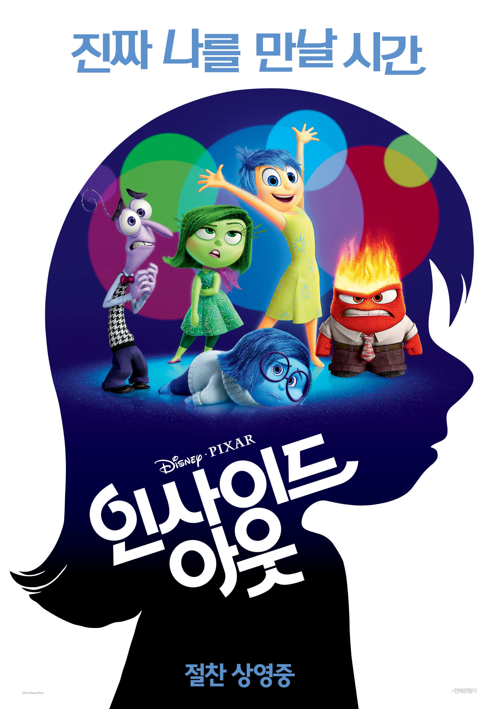

인사이드 아웃
- 감독 피트 닥터
- 개봉년도 2015
- 상영시간 1시간 42분
- 전체 관람가
- 이미 폴러 / 필리스 스미스 / 민디 케일링
줄거리“괜찮아, 다 잘 될 거야!우리가 행복하게 만들어 줄게” 모든 사람의 머릿속에 존재하는 감정 컨트롤 본부 그곳에서 불철주야 열심히 일하는 기쁨, 슬픔, 버럭, 까칠, 소심 다섯 감정들.이사 후 새로운 환경에 적응해야 하는 ‘라일리’를 위해 그 어느 때 보다 바쁘게 감정의 신호를 보내지만 우연한 실수로 ‘기쁨’과 ‘슬픔’이 본부를 이탈하게 되자 '라일리’의 마음 속에 큰 변화가 찾아온다.